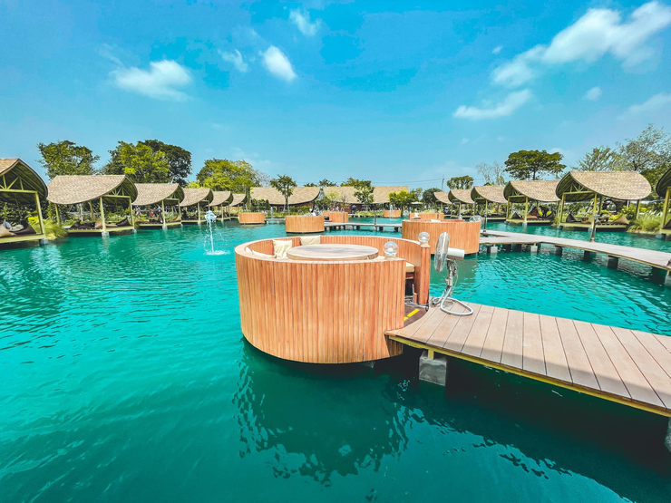

Bubble in the forest
ร้าน Bubble in the forest ตั้งอยู่ที่พุทธมณฑลสาย 5 ตกแต่งในสไตล์คล้ายๆ กับที่พักในมัลดีฟส์ คือมีบ่อน้ำสีมรกตอยู่ตรงกลาง และเชื่อมต่อกันด้วยสะพานไม้ที่ทอดยาวไปในบ่อน้ำ เป็นมุมถ่ายภาพที่ดูสวยงามและแปลกตาจริงๆ
ร้าน Bubble in the forest ตั้งอยู่ที่พุทธมณฑลสาย 5 ตกแต่งในสไตล์คล้ายๆ กับที่พักในมัลดีฟส์ คือมีบ่อน้ำสีมรกตอยู่ตรงกลาง และเชื่อมต่อกันด้วยสะพานไม้ที่ทอดยาวไปในบ่อน้ำ เป็นมุมถ่ายภาพที่ดูสวยงามและแปลกตาจริงๆ